Nepal Flash Flood
You can bring urgently needed help to families suffering from Nepal’s flash flood.
Emergency

Season of Creation 2026 · Current appeal
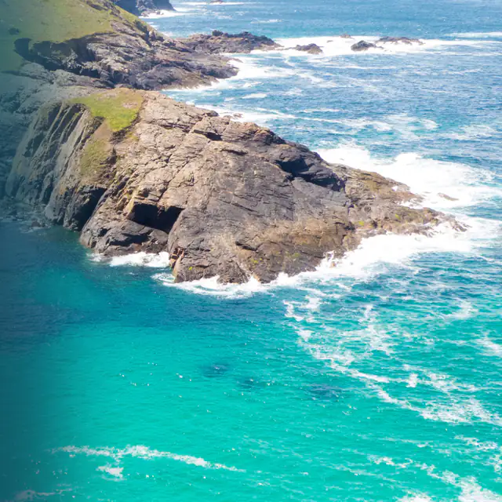
Our world is in crisis. Help us protect, care for and renew life on our planet through the Season of Creation Appeal.
You can bring urgently needed help to families suffering from Nepal’s flash flood.
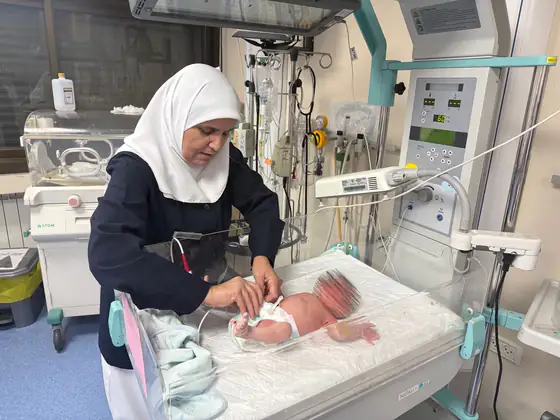
You can help bring medical relief to families in Gaza and the West Bank who are living through ongoing violence and displacement.
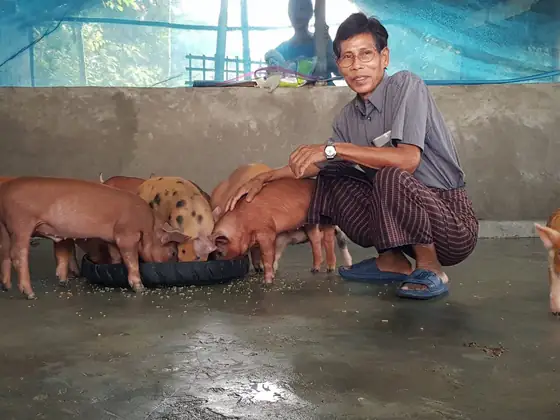
Support vulnerable displaced people during the protracted crisis in Myanmar.
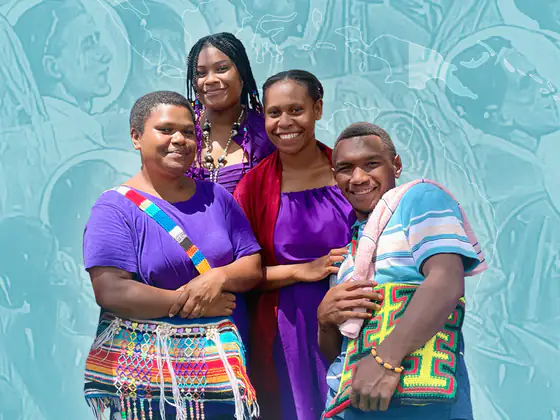
The New Guinea Martyrs chose to remain with the people they loved. Honour their legacy by supporting education and leadership programs for our neighbours in Papua New Guinea.
Anglicans in Development (AID) is wholly owned by ABM and operates our Sustainable Communities program.
 Anglicans in DevelopmentDonations ($2 and over) made to AID are tax-deductible.
Anglicans in DevelopmentDonations ($2 and over) made to AID are tax-deductible.
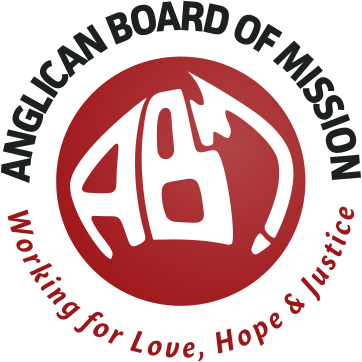
Anglican Board of MissionDonations made to ABM are not tax-deductible.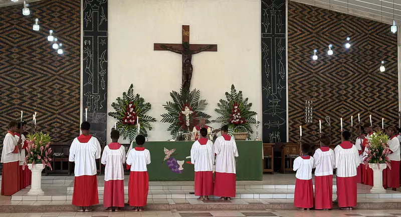
Prayer of the day
God of all, bless the Anglican Board of Mission as it serves the Church in Australia and our partner churches overseas. Inspire its work and its vision that all may come to know your justice, your peace and your love; through Jesus Christ our Lord. Amen.
A Prayer Book for Australia, p 214
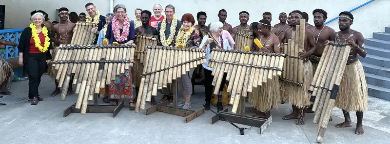
“Come and See” is repeated throughout the Bible, inviting people to experience what God is doing.
ABM’s Pilgrimage program is an opportunity for ABM supporters to “come and see” what God is doing through their support of our partners. It is a chance to experience what it means to be church in a different culture and context.
Register your interest The Solomon Islands pilgrimage, July 2026
We will come back changed. Of that I am certain. But of course, that is the reason why you go on pilgrimage in the first place, to find the holy, stumble upon God in action, and be changed forever by the experience.
ABM’s appeals follow the church year, from Advent to the Season of Creation. These are this year’s.
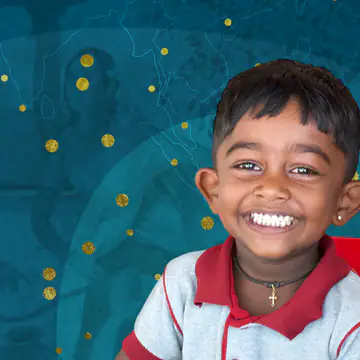
In the laughter of children we hear the angels sing
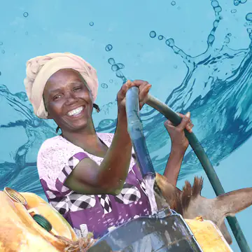
Clean water, decent toilets and good hygiene are basic human rights.
Standing in Solidarity with the Church in the Land of the Holy One
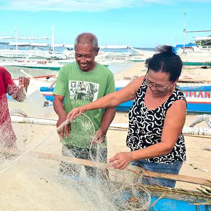
Together, we can empower more people around the world
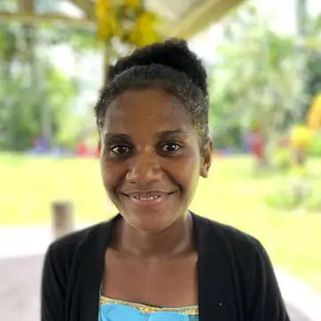
Honour the martyrs by supporting literacy in Papua New Guinea
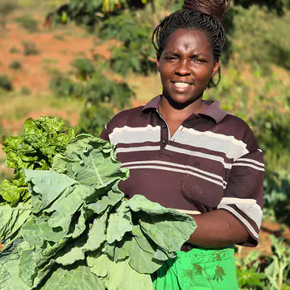
Caring for God’s earth is both a responsibility and a reflection of faith in action.
Emergency appeals open now
ABM AID’s Sustainable Communities work is done in collaboration with Anglican Church Partners across the Pacific, Africa, the Middle East, South East Asia and Sri Lanka.
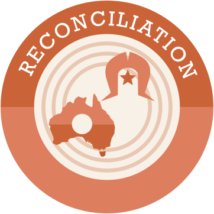
Programs: Reconciliation Fund, Aboriginal and Torres Strait Islander Leadership, Bishop Arthur Malcolm Endowment Fund
We believe that the task of working for reconciliation within Australia is integral to mission.
Through its Reconciliation Fund, ABM provides a mechanism for the National Aboriginal and Torres Strait Islander Anglican Council (NATSIAC) to prioritise and fund local ministry initiatives by, for and with Aboriginal and Torres Strait Islander peoples.
Partner: Diocese of Jerusalem
In Gaza and the West Bank, your generosity enables the Diocese of Jerusalem to provide emergency medical care and essential health services to families in need.
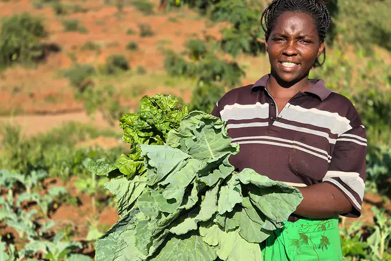
Partner: Anglican Church of Kenya
In Kenya, your generous support enabled our partner, Anglican Development Services Eastern, to work with local people to build a sand dam that provides fresh water close by.
Partner: Church of the Province of Myanmar
Over the past few years, AID’s partner, the Church of the Province of Myanmar, has been providing emergency food relief and other support to people who have been displaced from their homes through the ongoing humanitarian crisis in that country.
Partners: Anglican Church of Papua New Guinea, Bishop Newton School of Theology
As the Second World War reached Papua New Guinea, twelve Anglican martyrs chose to remain in that country with the people they loved.
Today, we honour their memory through the Martyrs Gift – supporting education, strong leadership and brighter futures for our neighbours in Papua New Guinea.
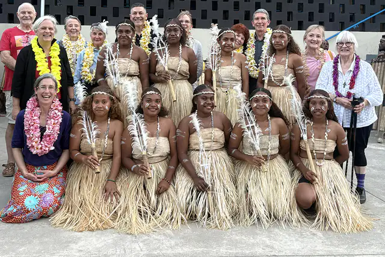
Partner: Anglican Church of Melanesia
“In July 2026, 12 pilgrims joined me for 10 days in the Solomon Islands, visiting the Anglican Church of Melanesia (ACOM).”

Partner: Church of Ceylon
In a country where differences of religion have caused conflict and misunderstanding, our work in Sri Lanka, through the Church of Ceylon, promotes peace.
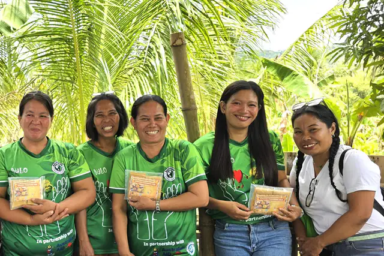
Partners: Episcopal Church in the Philippines, Philippine Independent Church
Rosalina is one of 245 rural people who gained new skills in organic farming and increased their food production through a community development program in the Visayas region of the Philippines.
“If the project had not come to the community, we would still be confined to our homes.”
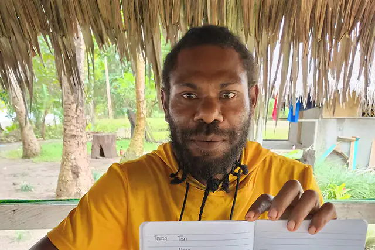
Partner: Anglican Church of Melanesia
Ray Jounto grew up in the remote coastal village of Wasaka in far north Vanuatu. He joined his first adult literacy and numeracy class in 2015.
The classes are run by ABM AID’s partner in Vanuatu, the Anglican Church of Melanesia (ACOM).
How did Ray, with no formal education, become so respected in Wasaka?
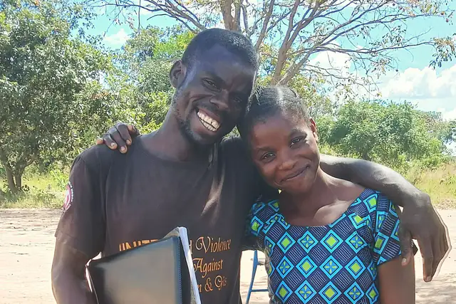
Partners: St John’s Anglican Seminary Zambia, Zambia Anglican Council
An independent evaluation of the Zambia Anglican Council’s Gender Program has found that equality between men and women has improved, conflict has reduced, and local organisations have banded together as a result of the program’s activities.